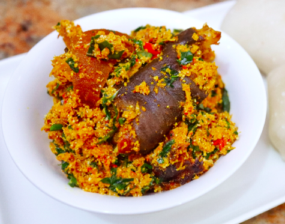

EGUSI

Egusi Stew is A Cultural Nigerian Dish made out of certain cucurbitaceous plants(squash, melon, gourd).
INGREDIENTS
- Red Onion
- Fresh habanero or Scotch bonnet pepper
- Cups of ground egusi seeds
- Palm Oil
- Salt
- Ground crayfish
- Kale or Spinach
- Bitter leaf
STEPS
- For the Stock: In a medium pot, combine beef, onion, crayfish, salt, red pepper, and 6 1/2 cups water and bring to a boil. Lower heat to maintain a simmer and cook until the stock is slightly reduced and the beef is mostly tender, about 45 minutes (the beef will tenderize further when cooked in the soup). Using a slotted spoon, remove beef and transfer to a medium heatproof bowl; set aside. Reserve stock (you should have about 5 1/2 cups).
- For the Egusi Soup: In a food processor or countertop blender, process onion, habanero pepper (if using), and 1/4 cup water until smooth. Scrape into a medium bowl and stir in the ground egusi seeds. Add water, 1 tablespoon at a time, until a thick, creamy paste has formed (paste should be viscous and hold its shape). Set aside.
- In a 4-quart saucepan, heat oil over low heat for 1 minute. Slowly add all of the reserved stock, along with the crayfish, and bring to a gentle simmer. Add paste, 1 heaped teaspoon at a time, to stock. Cover and cook, stirring and gently scraping the bottom of the pot occasionally, until all of the paste is firm and crumbly, about 25 minutes (patches of orange-red palm oil may bubble on top or around the sides).
- Add reserved beef and stir gently to break up the cooked paste into curds (stirring more or less affects the size of the curds). Season with salt and pepper to taste. Continue to cook until beef is heated through and tender, and some of the orange-red palm oil pools on top, about 10 minutes.
- Mound pumpkin leaves and waterleaf on top of soup without stirring, then cover and let steam until greens are wilted, about 2 minutes. Stir in wilted greens. Add bitter leaf and cook until soft, about 8 minutes.
- Divide soup among warmed bowls and serve hot or at room temperature with eba or Pounded Yam.